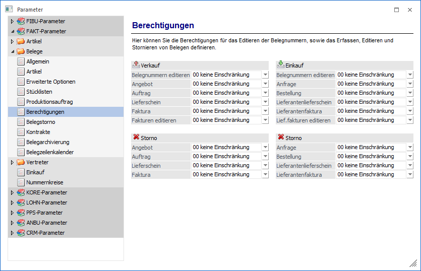
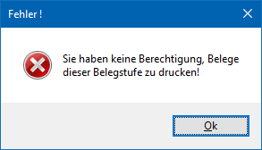
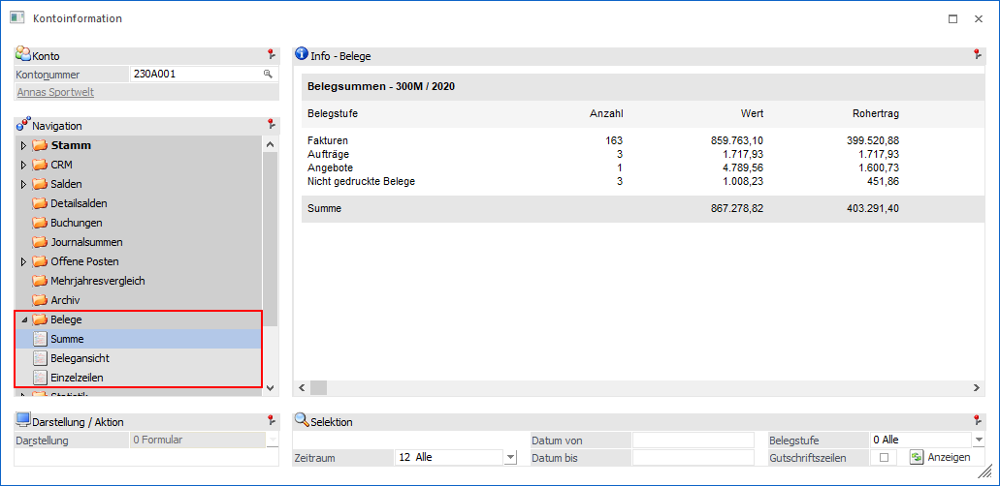
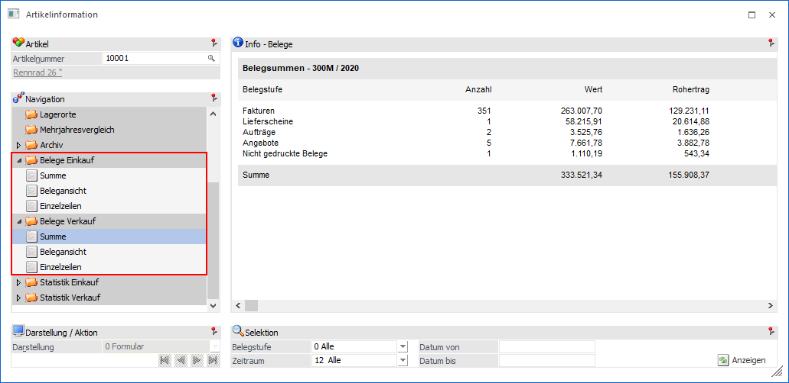

Über den Bereich "FAKT-Parameter - Belege - Berechtigungen" können Berechtigungen für das Editieren der Belegnummern, sowie das Erfassen, Editieren und Stornieren von Belegen der WinLine FAKT hinterlegt werden.
Hinweis
Standardmäßig wird das Fenster in einem "Lesemodus" geöffnet, d.h. es können die bestehenden Einstellungen kontrolliert, Änderungen allerdings nicht durchgeführt werden. Hierfür muss zunächst mit Hilfe des Buttons "Bearbeiten" der "Bearbeitungsmodus" aktiviert werden. Alternativ kann diese Aktivierung auch über das Kontextmenü der rechten Maustaste (Funktion "Applikation xxx bearbeiten") erfolgen.

Ø Verkauf / Einkauf
In diesem können Berechtigungsprofile hinterlegt werden, die das Editieren von Belegnummern, das Erfassen und Editieren von Belegen, sowie das Stornieren von Belegen definiert. Diese Berechtigungen untergliedern sich dabei in die Bereiche "Verkauf" und "Einkauf".
Diese Einstellungen gelten für alle Bereiche, wo die oben angeführten Punkte (Erfassen eines Angebots, Editieren einer Belegnummer im Verkauf, usw.) ausgeführt werden können.
Hinweis
Benutzern des Typs "Administrator" oder mit der Administratorenberechtigung "Benutzeradministrator" steht in der Auswahlbox der Punkt ">> Neues Profil" zur Verfügung. Über die Anwahl dieses Eintrags kann in der Folge ein neues Berechtigungsprofil angelegt werden.
Des Weiteren stehen in den verschiedenen Auswertungen jene Bereiche nicht zur Verfügung, für welche der Benutzer keine Berechtigung hat:
Backlog
Bei Ausgabe einer Belegstufe für die der Benutzer keine Berechtigung hat erfolgt ein Hinweis:

Wird eine Belegübersicht ausgewertet, so werden nur jene Belegstufen ausgegeben für die der Benutzer die Berechtigung hat.
INFO/Konteninfo/Belege
Im Bereich der Belege werden nur jene Belegstufen ausgegeben für die der Benutzer die entsprechende Berechtigung hat

INFO/Artikelinfo/Belege
Im Bereich der Belege werden nur jene Belegstufen ausgegeben für die der Benutzer die Berechtigung hat

Kostenträgerauswertung / Belegverfolgung
Es werden nur die Belegstufen ausgegeben, für die der Benutzer lt. FAKT-Parameter die Berechtigung hat.